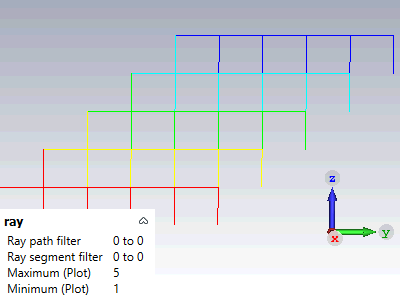

|
|
RayResultCreator Object
Offers methods to create the ray results and register them in the result manager. The binary tree is used for the construction of the rays.
Reset
Resets all internal settings to their initial values.
SetLastPointName( name labelName )
Define the node with given name to be able to visit them again and add point to the "right" brunch. If it exists, it will be rewritten.
GoToPoint( name labelName )
Go to the node with given name. The next point will be added to the "right" brunch in the binary tree. If it exists, it will be rewritten.
EndRay
This commands ends the definition of the ray.
AddPointAndQuantity( double x, double y, double z, double q)
Add a node with point coordinates x, y, z and the quantity value q to the tree. If the node is empty, the point is added to the "left"( reflection) brunch in the binary tree, otherwise in the "right"( transition/refraction)
SetRayplotType( string Filter )
Set the interpolation mode.
|
Filter |
Action |
|
"discrete" |
The quantity values are not interpolated between two points. |
| other(default) |
The quantity values are t interpolated linear between two points. |
SetQuantityName( string q)
Define quantity name with given name, that should be stored in file.
SetQuantityUnit( string unit )
Define unit with given name, that should be stored in file. The unit string uses the syntax described on the Units help page.
WriteFile( string filename)
Write the result file with the given filename.
AddRayResult( string treepath)
Add the result t the tree with given tree path( i.e. "2D\3D Results\Rays\own result").
DeleteResult
Delete defined results.
RayResultCreator.Reset
RayResultCreator.SetRayplotType "discrete"
RayResultCreator.SetQuantityName "Reflections"
RayResultCreator.SetQuantityUnit "1"
Dim ray As Integer, num_rays As Integer
Dim ystart As Double, zstart As Double
ystart = -480.0
zstart = 1760
num_rays = 5
For ray = 1 To num_rays
Dim i As Integer, num As Integer
num = 5
Dim y As Double, z As Double, deltaY As Double, deltaZ As Double
deltaY = (960-480) / num
deltaZ = (1760-1340) / num
y = ystart - (ray-1) *deltaY
z = zstart
For i = 1 To num
RayResultCreator.AddPointAndQuantity(1310.0, y, z, i)
RayResultCreator.SetLastPointName "1"
RayResultCreator.AddPointAndQuantity(1310.0, y, z - deltaZ, i)
RayResultCreator.GoToPoint("1")
RayResultCreator.AddPointAndQuantity(1310.0, y - deltaY, z, i)
y = y - deltaY
z = z - deltaZ
Next i
RayResultCreator.EndRay
Next ray
RayResultCreator.WriteFile("test.bix")
RayResultCreator.AddRayResult("2D/3D Results\Rays\ray")
SelectTreeItem "2D/3D Results\Rays\ray"

| CST Studio Suite 2022 |
|